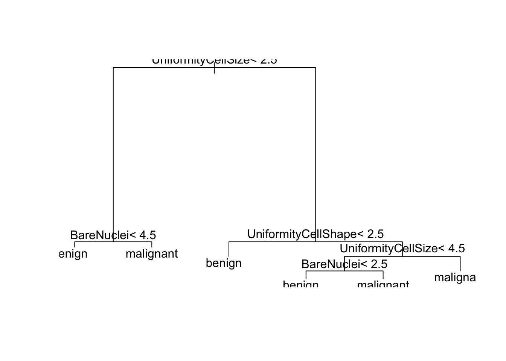
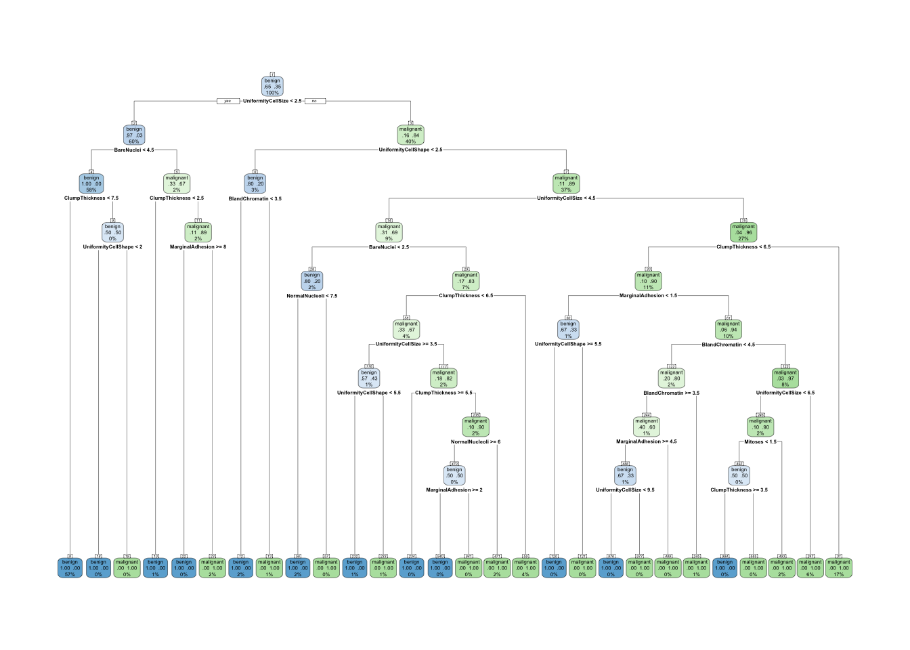
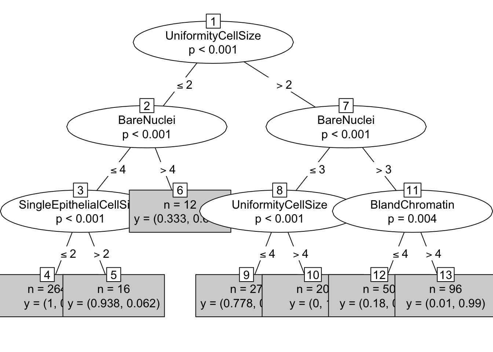

The goal of this notebook is to introduce how to induce decision trees in R using the party and rpart packages. For this example we are going to use the Breast Cancer Wisconsin (Original) Data Set and in particular the breast-cancer-wisconsin.data file from the UCI Machine Learning Repository.
First we are going to load the dataset as a dataframe. We are assuming that the current working directory is in the same directory where the dataset is stored. We add the sep option because the default separator is the empty string. In addition, as one can observe from the dataset instructions, the missing values are denoted with ?. To check the documentation of the read.table function use the command ?read.table.
# Downloading the file
fileURL <- "http://archive.ics.uci.edu/ml/machine-learning-databases/breast-cancer-wisconsin/breast-cancer-wisconsin.data"
download.file(fileURL, destfile="breast-cancer-wisconsin.data", method="curl")
# read the data
data <- read.table("breast-cancer-wisconsin.data", na.strings = "?", sep=",")
str(data)## 'data.frame': 699 obs. of 11 variables:
## $ V1 : int 1000025 1002945 1015425 1016277 1017023 1017122 1018099 1018561 1033078 1033078 ...
## $ V2 : int 5 5 3 6 4 8 1 2 2 4 ...
## $ V3 : int 1 4 1 8 1 10 1 1 1 2 ...
## $ V4 : int 1 4 1 8 1 10 1 2 1 1 ...
## $ V5 : int 1 5 1 1 3 8 1 1 1 1 ...
## $ V6 : int 2 7 2 3 2 7 2 2 2 2 ...
## $ V7 : int 1 10 2 4 1 10 10 1 1 1 ...
## $ V8 : int 3 3 3 3 3 9 3 3 1 2 ...
## $ V9 : int 1 2 1 7 1 7 1 1 1 1 ...
## $ V10: int 1 1 1 1 1 1 1 1 5 1 ...
## $ V11: int 2 2 2 2 2 4 2 2 2 2 ...We won’t be needing the id number (1st column), because it is not an informative attribute, so let’s remove it.
data <- data[,-1]Let’s put names in the columns
names(data) <- c("ClumpThickness",
"UniformityCellSize",
"UniformityCellShape",
"MarginalAdhesion",
"SingleEpithelialCellSize",
"BareNuclei",
"BlandChromatin",
"NormalNucleoli",
"Mitoses",
"Class")Also let???s make the Class column a categorical value, aka a factor in R
data$Class <- factor(data$Class, levels=c(2,4), labels=c("benign", "malignant"))Now let???s see a summary of the data:
print(summary(data))## ClumpThickness UniformityCellSize UniformityCellShape MarginalAdhesion
## Min. : 1.000 Min. : 1.000 Min. : 1.000 Min. : 1.000
## 1st Qu.: 2.000 1st Qu.: 1.000 1st Qu.: 1.000 1st Qu.: 1.000
## Median : 4.000 Median : 1.000 Median : 1.000 Median : 1.000
## Mean : 4.418 Mean : 3.134 Mean : 3.207 Mean : 2.807
## 3rd Qu.: 6.000 3rd Qu.: 5.000 3rd Qu.: 5.000 3rd Qu.: 4.000
## Max. :10.000 Max. :10.000 Max. :10.000 Max. :10.000
##
## SingleEpithelialCellSize BareNuclei BlandChromatin
## Min. : 1.000 Min. : 1.000 Min. : 1.000
## 1st Qu.: 2.000 1st Qu.: 1.000 1st Qu.: 2.000
## Median : 2.000 Median : 1.000 Median : 3.000
## Mean : 3.216 Mean : 3.545 Mean : 3.438
## 3rd Qu.: 4.000 3rd Qu.: 6.000 3rd Qu.: 5.000
## Max. :10.000 Max. :10.000 Max. :10.000
## NA's :16
## NormalNucleoli Mitoses Class
## Min. : 1.000 Min. : 1.000 benign :458
## 1st Qu.: 1.000 1st Qu.: 1.000 malignant:241
## Median : 1.000 Median : 1.000
## Mean : 2.867 Mean : 1.589
## 3rd Qu.: 4.000 3rd Qu.: 1.000
## Max. :10.000 Max. :10.000
## The next step is to split the dataset into a training (70%) and a validation set (30%). For comparing later different models or the same models trained with differernt parameters, we are going to use the same training and validation set. Since we are splitting them randomly, we set a seed so that we maintain the same split throughout our experiments.
set.seed(1234)
ind <- sample(2, nrow(data), replace=TRUE, prob=c(0.7, 0.3))
trainData <- data[ind==1,]
validationData <- data[ind==2,]Now we load the libraries rpart, rpart.plot and party. If they are not in your system you will have to install them with the commands: install.packages("rpart"), install.packages("rpart.plot") and `install.packages(“party”).
library(rpart)
library(rpart.plot)
library(party)## Loading required package: methods## Loading required package: grid## Loading required package: mvtnorm## Loading required package: modeltools## Loading required package: stats4## Loading required package: strucchange## Loading required package: zoo##
## Attaching package: 'zoo'## The following objects are masked from 'package:base':
##
## as.Date, as.Date.numeric## Loading required package: sandwichLet???s product a decision tree by training the induction algorithm on the train dataset. Check out the options of rpart with the command ?rpart.
tree = rpart(Class ~ ., data=trainData, method="class")One can also use a differrent split criterion like the entropy split decision rule:
entTree = rpart(Class ~ ., data=trainData, method="class", parms=list(split="information"))The tree in text form:
print(tree)## n= 485
##
## node), split, n, loss, yval, (yprob)
## * denotes terminal node
##
## 1) root 485 171 benign (0.647422680 0.352577320)
## 2) UniformityCellSize< 2.5 292 9 benign (0.969178082 0.030821918)
## 4) BareNuclei< 4.5 280 1 benign (0.996428571 0.003571429) *
## 5) BareNuclei>=4.5 12 4 malignant (0.333333333 0.666666667) *
## 3) UniformityCellSize>=2.5 193 31 malignant (0.160621762 0.839378238)
## 6) UniformityCellShape< 2.5 15 3 benign (0.800000000 0.200000000) *
## 7) UniformityCellShape>=2.5 178 19 malignant (0.106741573 0.893258427)
## 14) UniformityCellSize< 4.5 45 14 malignant (0.311111111 0.688888889)
## 28) BareNuclei< 2.5 10 2 benign (0.800000000 0.200000000) *
## 29) BareNuclei>=2.5 35 6 malignant (0.171428571 0.828571429) *
## 15) UniformityCellSize>=4.5 133 5 malignant (0.037593985 0.962406015) *And in a visual representation:
plot(tree)
text(tree)
A more advanced representation can be produced using the rpart.plot library as follows:
rpart.plot(tree, extra = 104, nn = TRUE)The parameters of the decision tree method can be shown with the command:
rpart.control()## $minsplit
## [1] 20
##
## $minbucket
## [1] 7
##
## $cp
## [1] 0.01
##
## $maxcompete
## [1] 4
##
## $maxsurrogate
## [1] 5
##
## $usesurrogate
## [1] 2
##
## $surrogatestyle
## [1] 0
##
## $maxdepth
## [1] 30
##
## $xval
## [1] 10For their meaning you can check out the documentation ?rpart.control. The most important of them are: - minsplit: the minimum number of observations that must exist in a node in order for a split to be attempted. - minbucket: the minimum number of observations in any terminal (leaf) node. - maxdepth: sets the maximum depth of any node of the final tree - cp: parameter controlling if the complexity for a given split is allowed and is set empirically. Bigger values equal more prunning.
# Usage
tree_with_params = rpart(Class ~ ., data=trainData, method="class", minsplit = 1, minbucket = 1, cp = -1)
rpart.plot(tree_with_params, extra = 104, nn = TRUE)
Let???s also try the party library and the ctree function:
library(party)
ctree = ctree(Class ~ ., data=trainData)
# print it
print(ctree)##
## Conditional inference tree with 7 terminal nodes
##
## Response: Class
## Inputs: ClumpThickness, UniformityCellSize, UniformityCellShape, MarginalAdhesion, SingleEpithelialCellSize, BareNuclei, BlandChromatin, NormalNucleoli, Mitoses
## Number of observations: 485
##
## 1) UniformityCellSize <= 2; criterion = 1, statistic = 323.402
## 2) BareNuclei <= 4; criterion = 1, statistic = 169.767
## 3) SingleEpithelialCellSize <= 2; criterion = 1, statistic = 29.834
## 4)* weights = 264
## 3) SingleEpithelialCellSize > 2
## 5)* weights = 16
## 2) BareNuclei > 4
## 6)* weights = 12
## 1) UniformityCellSize > 2
## 7) BareNuclei <= 3; criterion = 1, statistic = 42.361
## 8) UniformityCellSize <= 4; criterion = 1, statistic = 23.999
## 9)* weights = 27
## 8) UniformityCellSize > 4
## 10)* weights = 20
## 7) BareNuclei > 3
## 11) BlandChromatin <= 4; criterion = 0.996, statistic = 12.225
## 12)* weights = 50
## 11) BlandChromatin > 4
## 13)* weights = 96# visualize it
plot(ctree, type="simple")
The final step is to print the results in the validation set. We will create a function that get as input a tree model, the validation data and the type of the tree and prints results in the console.
evaluation <- function(model, data, atype) {
cat("\nConfusion matrix:\n")
prediction = predict(model, data, type=atype)
xtab = table(prediction, data$Class)
print(xtab)
cat("\nEvaluation:\n\n")
accuracy = sum(prediction == data$Class)/length(data$Class)
precision = xtab[1,1]/sum(xtab[,1])
recall = xtab[1,1]/sum(xtab[1,])
f = 2 * (precision * recall) / (precision + recall)
cat(paste("Accuracy:\t", format(accuracy, digits=2), "\n",sep=" "))
cat(paste("Precision:\t", format(precision, digits=2), "\n",sep=" "))
cat(paste("Recall:\t\t", format(recall, digits=2), "\n",sep=" "))
cat(paste("F-measure:\t", format(f, digits=2), "\n",sep=" "))
}
evaluation(tree, validationData, "class")##
## Confusion matrix:
##
## prediction benign malignant
## benign 138 6
## malignant 6 64
##
## Evaluation:
##
## Accuracy: 0.94
## Precision: 0.96
## Recall: 0.96
## F-measure: 0.96evaluation(entTree, validationData, "class")##
## Confusion matrix:
##
## prediction benign malignant
## benign 138 5
## malignant 6 65
##
## Evaluation:
##
## Accuracy: 0.95
## Precision: 0.96
## Recall: 0.97
## F-measure: 0.96evaluation(tree_with_params, validationData, "class")##
## Confusion matrix:
##
## prediction benign malignant
## benign 139 12
## malignant 5 58
##
## Evaluation:
##
## Accuracy: 0.92
## Precision: 0.97
## Recall: 0.92
## F-measure: 0.94evaluation(ctree, validationData, "response")##
## Confusion matrix:
##
## prediction benign malignant
## benign 138 6
## malignant 6 64
##
## Evaluation:
##
## Accuracy: 0.94
## Precision: 0.96
## Recall: 0.96
## F-measure: 0.96The tutorials, besides including the author's original contributions and knowledge of Machine Learning algorithms and R, also include contributions from other material and more specifically: 1) from an introductory R leaflet from the Pattern Recognition course leaflets of the Electrical and Computer Engineering Department of the Aristotle University of Thessaloniki (Fall semester 2016, authors: Themistoklis Diamantopoulos/Michalis Papamichail, professor: Andreas Symeonidis), 2) the leaflet from the course CS545 Machine Learnig (Fall 2008, author and professor: Charles W. Anderson) and 3) Software Caprentry lessons like Programming in R from which the inflammation data were also included.
This work is made available under the Creative Commons Attribution license.